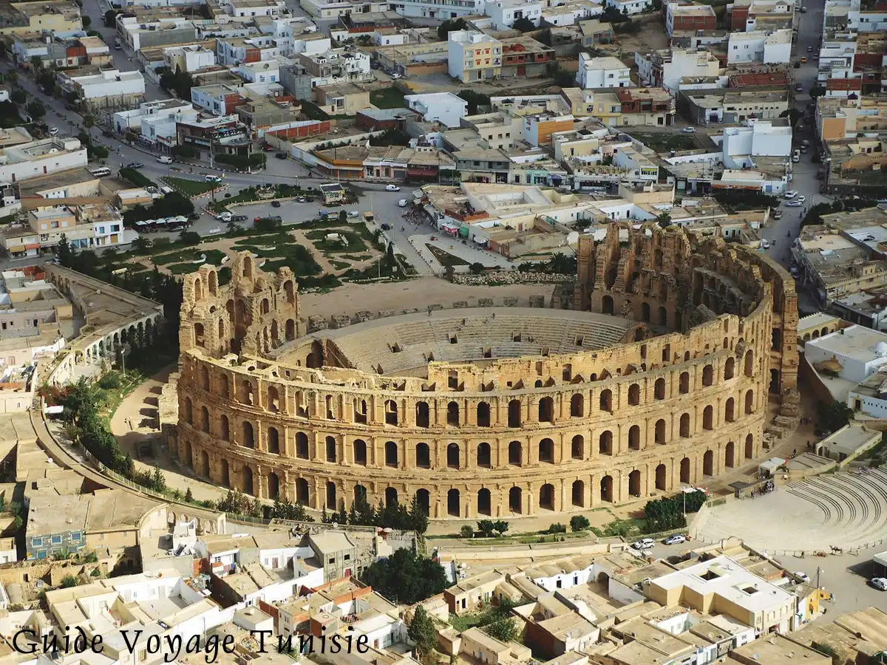
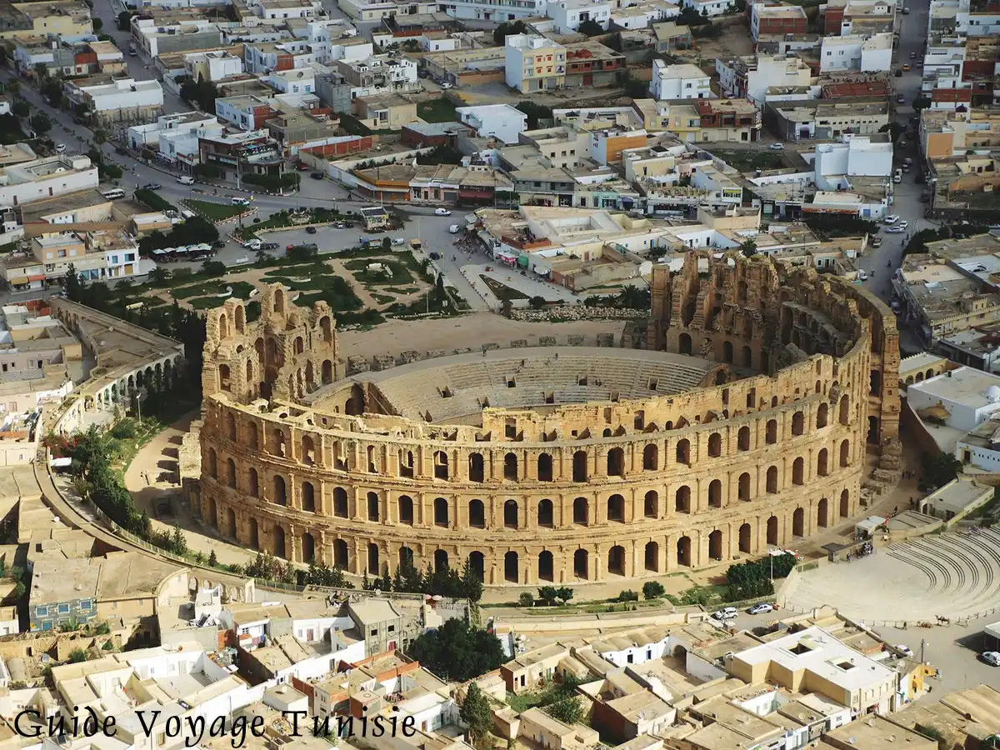

Voici le premier site touristique Voici le premier site touristique Voici le premier site touristique Voici le premier site touristique Voici le premier site touristique Voici le premier site touristique Voici le premier site touristique Voici le premier site touristique Voici le premier site touristique
Le ksar ouled Soultan En vertu d’un nouveau décret, Tataouine, cette région séculaire, un berceau de la civilisation dont les monuments et la géographie témoignent une intimité spécifique avec l’histoire ancienne, vient d’être ajoutée à la liste des zones touristiques municipales. La promotion d’une ville au statut d’une zone touristique municipale lui permet de bénéficier de lignes budgétaires pour l'amélioration du cadre de vie. Les zones touristiques municipales sont gérées par le ministère de l'Intérieur, le secrétariat d'Etat chargé des Affaires régionales et des Collectivités locales et le ministère du Tourisme.
Il est à noter que la région de Tataouine a bénéficié, au mois de décembre dernier,
des financements supplémentaires, dans le cadre des interventions du Fonds de la protection des zones touristiques, qui ont été mobilisés pour l'aménagement des divers sites et l'embellissement de la ville de Tataouine qui compte 60 mille habitants.
Plusieurs sites historiques et géologiques ont été déjà aménagés à cet effet tels que le musée "Mémoire de la terre". Les travaux de réaménagement de la première zone touristique dans la région touchent une superficie de 30 hectares en vue d'augmenter sa capacité d'accueil de 1500 nouveaux lits. A rappeler que le programme
d'investissement municipal dans la ville de Tataouine est estimé à 4 millions 400 mille dinars.
Voici le second site touristique Voici le second site touristique Voici le second site touristique Voici le second site touristique Voici le second site touristique Voici le second site touristique Voici le second site touristique Voici le second site touristique Voici le second site touristique
Le Colisée d’El Jem, à l'origine amphithéâtre Flavien (Colosseo en italien), est un immense amphithéâtre ovoïde situé dans le centre de la ville de Rome, entre l'Esquilin et le Cælius, le plus grand jamais construit dans l'empire romain. Il est l'une des plus grandes œuvres de l'architecture et de l'ingénierie romaines.
En Tunisie, la civilisation romaine a laissé beaucoup de traces. Parmi les nombreuses constructions antiques persistantes de nos jours, certaines sont encore fonctionnelles. L’une des plus intéressantes est l’aqueduc Zaghouan – Carthage, permettant l’adduction d’eau du Temple des Eaux de Zaghouan vers les Termes d’Antonin à Carthage.
Voici le second site touristique Voici le second site touristique Voici le second site touristique Voici le second site touristique Voici le second site touristique Voici le second site touristique Voici le second site touristique Voici le second site touristique Voici le second site touristique
L'aqueduc Zaghouan – Carthage, Il s'agit du plus grand complexe du genre jamais réalisé. Il associe trois composantes : les captages de quatre sources principales avec dotation d'un cadre monumental, le nymphée connu couramment sous l'appellation de « temple des eaux », d'une grande valeur archéologique, un aqueduc de 132 km courant en général à fleur de terre ou en parcours souterrain et dont de nombreux tronçons marquent à ce jour le paysage en de nombreux endroits avec des arcades de plus de 20 m de hauteur, et les citernes de stockage de la Maalga à Carthage, auxquelles il faut ajouter les grands thermes publics de Carthage, dits thermes d'Antonin, situés en bord de mer et qui constituaient le but ultime et l'aboutissement de l'ensemble. Construit au début du IIe siècle après J.-C., ce complexe a depuis marqué le paysage jusqu'à aujourd'hui et a connu une longévité exceptionnelle puisque, de nos jours encore, une bonne partie de ses canalisations est toujours fonctionnelle.
La source
Connue depuis toujours, cette source (aïn en arabe) sort par une faille au niveau du Temple des Eaux. La présence de cette source importante est liée à la nature du massif de Zaghouan (1295 m).
En effet, le massif s’élève au dessus des plaines environnantes. Les nuages s’accrochent facilement aux pentes, les pluies sont donc relativement importantes sur les flancs du Djebel.
 
